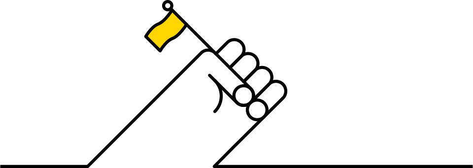

Seven ‘Zero Hero’ principles
Below, we have formulated seven principles for how brands can encourage these more sustainable behaviours and have brought them to life with examples from across a range of sectors and markets.

1. Don’t boast, nudge
Brands aiming to inspire change should resist the temptation to brag about themselves. Instead they should offer millions of people ways to make small changes to their behaviours. For example…

Greggs: Making vegan choices mainstream
Greggs trades from around 2,000 outlets in the UK and sells 1.5 million sausage rolls a week. In 2019, they created a new vegan option with Quorn (a brand that is itself encouraging consumers to ‘Take a step in the right direction’). Despite the objections of Piers Morgan, Greggs’ vegan sausage roll was launched in response to public demand after an online petition by Peta was signed by more than 20,000 people. Greggs has since reported half-year sales rises of 14.7% and like-for-like sales growth in managed stores of 10.5%. And the bakery chain’s CEO, Roger Whiteside, has even announced that he is now a vegan himself.

Best Buy: Unhooking people from the cycle of throwaway culture
Best Buy, the giant electricals retailer, is helping customers use electronics more sustainably and encouraging them to break the cycle of ‘throwaway culture’ that has become the norm in the industry. Best Buy does this by building strong relationships between staff, communities and consumers: it trains employees to promote energy-efficient models across all its product lines; it has a network of Teen Tech Centers across the US, preparing teens from underserved communities for the tech-reliant jobs of the future; and, since 2009, it has recycled 2 billion pounds of consumer electronics at its more than 1,000 stores and kept tons more out of landfills by offering repairs and trade-ins.

KeepCup: Getting coffee lovers into great habits
As Abigail Forsyth, KeepCup’s Co-Founder says, “Many small acts make a phenomenal difference.” Since the first KeepCups were sold to coffee-loving Melbournians nearly ten years ago at a small design market, the brand has helped to kick start behaviour change, from discard to reuse. Today, KeepCups are used in more than 65 countries around the world, diverting millions of disposable cups from landfill every day.

2. Normalise the new
Brands can help to make adopting new behaviours easier by framing them as the ‘normal thing to do’ rather than as a radical (and therefore risky or unusual) choices. For example…
Bulb: Making switching to renewables a no-brainer
Bulb, the UK energy company, only launched in 2015, but in just three years has signed up over 300,000 households and acquired 1% of the household energy market. But success wasn’t built simply by shouting about the company’s green credentials. Indeed, despite using only renewable energy, Bulb is also one of the most competitively-priced providers in the market and has been able to effectively steal unhappy customers from unloved incumbents like British Gas and E.ON by offering good customer service, low prices and easy-to-understand bills alongside a promise to only use 100% renewable energy. Bulb is a brand that makes embracing renewables seem like the smart choice, rather than an unusual one.

Oatly: Stopping alternative products from seeming worthy and niche
Oatly is a vegan food brand from Sweden which produces alternatives to dairy products from oats. Its launch of oat milk as ‘Like milk, but for humans’ aimed to position the product as an actively better choice for your personal health (as well as the planet’s) rather than an ‘alternative’ or worthy product. As Oatly’s creative director, Michael Lee, notes, “It just becomes lame when you start preaching it in your communications.” The brand ensured mainstream appeal by hiring baristas to embed itself into coffee culture coffee and targeted flexitarians and meat reducers, not just hardcore vegans. Sales surges of Oatly in the US (where Oatly is now teaming up with Starbucks) and Europe is also driving rapid investment in new, sustainable production plants.

Salesforce: Changing the way companies measure their success
Salesforce is an American cloud-based software company that has built a $13 billion business around helping companies track their sales metrics; now it’s helping them track “green” metrics, too. As Fortune’s ‘Sustainability All Stars’ report notes, its new app lets Salesforce customers measure and analyse carbon emissions across their operations, including the equipment in their data centres and their employees’ business travel. Currently in a 10-customer pilot program, the app is part of a broader Salesforce campaign to normalise the idea of transparently reporting environmental impact to shareholders - something Salesforce has won plaudits from securities law experts for doing in its own annual filings.

3. Lead (don’t follow) your industry
Brands can establish their leadership credentials and drive widespread change by calling out the big problems that face their industry as a whole - and then inviting others to collaborate and take responsibility together, rather than simply going it alone. For example…
KLM: Changing attitudes to work and leisure travel
Dutch carrier KLM’s CEO, Pieter Elbers, has made clear that sustainable development in aviation is not a ‘one-airline-topic’. KLM believe that actual progress will only be made by working together as an industry and thus have launched their ‘Fly Responsibly’ initiative, inviting airlines, partners, customers and employees alike to share in KLM’s existing sustainability practices and tools, and provide KLM with their respective insights in return. In its advertising, KLM even asked travelers to pack light or simply not to fly - and instead to think about more environmentally friendly options like rail or coach for short-haul trips.

Triodos: Showing people that their investments can make a world of difference
Founded in the Netherlands in 1980, Triodos has more than half a million customers across Europe, offering current accounts in the Netherlands, UK, Spain and Germany. Triodos only lends money to organisations and projects that are “making a positive difference to society,” and aims to get people to really think about what their bank is doing with their money. “Money doesn’t have to be invested in the arms trade, fossil fuels and tobacco – it can be used to do good things that help build the society we want to live in,” says the bank.
Hilton: Putting guests in charge of their stay
100 years after its foundation, Hilton Hotels is finding new ways to make the industry more sustainable and keep its brand relevant. According to a survey of 72,000 Hilton guests, social, environmental and ethical considerations are central to their buying preferences, especially those younger than 25 years old. That’s why Hilton has committed to being the first major hotel chain to use science-based strategies to help preserve our natural resources. Hilton’s ‘Travel with Purpose’ strategy sees a focus on reducing water usage, sending zero soap to landfills and, in 2020, launching its Connected Room app across 200 hotels, enabling guests to track and control the impact of their room’s A/C, heating and lights.
4. Ask people to make a choice, not a sacrifice
Brands can persuade people to make more sustainable choices if they position their offerings as not just a ‘substitute’ or a ‘sacrifice’, but instead as more rigorously and carefully designed (and thus better than the competition, not just better for the planet). For example…

Everlane: Encouraging people to choose long-lasting style over fast fashion
Everlane is a US clothing retailer selling affordable, high-quality basics like $100 cashmere sweaters, $15 pima cotton T-shirts and $65 Japanese denim jeans. It launched in 2010 with a concept of ‘radical transparency’, offering the customer a full breakdown of how much it costs to make each product, from the price of the raw materials and transportation to exactly how much of a markup Everlane would take. The brand’s design aesthetic eschews trends and high colour in favour of a timeless no-nonsense and crucially, long-lasting style that flies in the face of fast fashion.

Seventh Generation: Changing the way generations care for their homes
Seventh Generation is the largest eco-friendly cleaning supplies seller in the US and, since its acquisition in 2016, it’s one of Unilever’s 28 Sustainable Living Brands - which grew 69% faster than the rest of the business in 2018, compared to 46% in 2017. The brand’s name is inspired by its mission to create “a consumer revolution that nurtures the health of the next seven generations.” By highlighting that plant-based cleaning products can deliver the powerful efficacy that consumers are looking for, Seventh Generation ensures people feel they’re getting a high-performance product that’s good for their homes as well as their conscience.
Deciem: Making ‘abnormal’ choices feel highly desirable
Deciem proudly describes itself as the ‘Abnormal Beauty Company’. It started trading in 2013, received investment from Estée Lauder in 2017, and now owns and operates more than 10 brands in the beauty world. In 2019, Deciem closed its website and stores on Black Friday, stating that “We no longer feel that Black Friday is an earth or consumer-friendly event”. This kind of action is a demonstration of how the brand is redefining what it means to be a ‘quality’ choice in the beauty category - making sustainability and ethical behaviours central to its definition, not just a bolt-on. Indeed, the brand states that: “Quality today means being authentic, being different, being functional, being beautiful and being sensibly priced, even to the wealthy. We choose to serve the educated, the curious and the intelligent who appreciate our dedication to this very genuine definition of quality.”

5. Be part of a league
Brands can drive up public consciousness - and demand for - sustainable practices by signing up to cross-category clubs, leadership initiatives and leagues dedicated to driving positive change. For example…

The RE100: Creating a club that companies want to be in
The Renewable Energy 100 is a league of the world’s most influential companies, committed to 100% renewable power by 2050 at the latest. Led by The Climate Group in partnership with CDP, RE100’s purpose is to accelerate change towards zero carbon grids, at global scale. RE100’s members include globally famous brands IKEA, Apple, Aviva, BT and Google. RE100 has now surpassed a 200-member milestone, driving 220 TWh of renewable electricity demand -– almost enough to power Indonesia.

B Corps: Establishing a badge that brands can be proud to wear
Certified B Corporations are businesses that meet the highest standards of verified social and environmental performance, public transparency, and legal accountability to balance profit and purpose. B Corps now include well-known brands like innocent, Patagonia, The Body Shop, Ella’s Kitchen, Allbirds, Intrepid Travel and The Guardian. The B Corp community works toward reduced inequality, lower levels of poverty, a healthier environment, stronger communities, and the creation of more high quality jobs with dignity and purpose. B Corps also form a community of leaders and drive a global movement of people using business as a force for good.

Chapter Zero: Arming people at the top table with the right arguments
Chapter Zero is a network of company chairs, committee chairs and non-executive directors, committed to developing their knowledge of the implications of climate change for UK business. Given the far-reaching impact and implications, Chapter Zero’s purpose is to enable these directors to understand how likely climate change is to affect their companies and sectors, and to encourage their boards to hold informed discussions and respond effectively to the climate change challenge. The name of the network, Chapter Zero, reflects the drive towards a net zero carbon economy and the major role business will play in achieving it.

6. Commit to learning and experimenting
Brands don’t have to claim to be perfect in order to positively influence behaviour. A commitment to experimenting, learning and collaborating can help brands to understand and connect more deeply with their consumers. For example…

IKEA: Giving a space and a voice to radical localism and activism
Last year, IKEA opened the world’s most sustainable IKEA store and a new Learning Lab in Greenwich, London. Since its opening, IKEA Greenwich has received an ‘Outstanding’ BREEAM certification – the highest award for sustainable construction. “The store takes sustainability to the next level, not just in its design and architecture, but also as it was built with the local community in mind. We want to inspire and enable Londoners to live a more sustainable life at home, through workshops and activities.” says Helen Aylett, IKEA Greenwich store manager. In a world of digital shopping, IKEA Greenwich is a refreshing reason to go in store.
Loop by TerraCycle: Making frequent sustainable choices highly convenient
Loop is a new platform aiming for zero-waste packaging through a “milkman model” - delivering goods in durable, reusable containers. Loop works in partnership with big brands, helping them to test new packaging concepts at scale. Unilever, Procter & Gamble, Clorox, Nestlé, Mars, Coca-Cola, and PepsiCo have all redesigned their packaging to participate in Loop’s pilot program. Products from orange juice and mayonnaise to hand soap and detergent come in multi-use containers. Even toothbrushes are reusable, with the head detaching from the lower half; new sticks of deodorant can be placed into recommissioned bases. “It has the same convenience of disposability,” founder Tom Szaky says. “This is how we move packaging and products from being disposable and owned by the consumer to being durable and borrowed by the consumer. Packaging becomes a service.”
Budweiser: Inviting the whole nation to work together on sustainable solutions
Budweiser is helping to shift popular attitudes towards sustainability, even using its 2018’s Superbowl TV advertising to announce that Budweiser is “Now brewed with wind power. For a better tomorrow.” The brand has set 2025 sustainability goals around four pillars: climate, water stewardship, packaging and smart agriculture. This has led to experimental new advertising; new partnerships with transportation players such as Nikola Motors and Tesla; a renewable energy deal with utility company Enel; and collaboration between the University of Idaho, Washington State University and barley growers to trial new water conservation and smart-irrigation practices.
7. Create new patterns of consumption - and business models
Brands can design whole new patterns of consumption that create new and different opportunities to monestise relationships with consumers - which is no bad thing if consumers feel they’re getting great value, as well as reducing their environmental impact.

Olio: Making wasting food feel weirder than sharing it
Olio is a food recycling app designed to tackle the problem of food waste by allowing people to share unwanted food. Users take pictures of their unwanted food and invite fellow Olio users who live nearby to collect them. Crucially, the food must be within its use-by date. Olio has also teamed up with 30 organisations, including Sainsbury’s and recipe box firm Hello Fresh. The platform is proudly for-profit, aiming to generate revenue via premium features for frequent users (like unlimited pick ups and first refusal on the best items), as well as via commission on donations and a classified section that gives local businesses the opportunity to communicate with people in their area.

Depop is a social shopping app, which blends the aesthetic and social aspects of Instagram with the buy-and-sell format of eBay. Established in 2011, it now has over 15 million users in 147 countries. “Not purchasing new items where possible and recycling things you get tired of leaves you with a pretty small consumption footprint,” says Sylvie Mackower, a 20-year Depop seller. Depop, which generates revenue via transaction charges, helps its sellers make money and makes users feel better about shopping as they’re supporting enterprising individuals, rather than mass producers of fast fashion destined for landfill.

Lush: Showing millions of people that plastic isn’t fantastic
Lush is a household name in handmade cosmetics that has demonstrated that being a good business can actually be good business. Lush has a 100% vegetarian philosophy, ethical buying policies, a firm stance against animal testing and ‘Naked’ zero-plastic packaging. Globally in 2018, Lush customers saved 6.6 million bottles of plastic bath products by choosing Naked. It also has a take-back scheme called the 5 Pot Programme, which encourages customers to reuse the black pots that Lush products come in. The company follows a “no advertising policy” - with no TV campaigns or celebrity endorsements and instead relies on the advocacy generated by its customers.